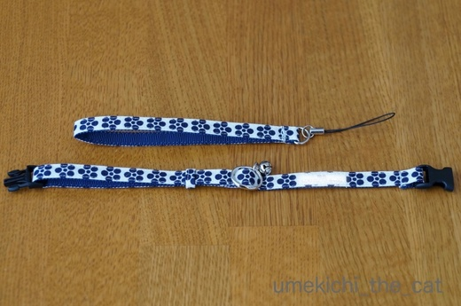
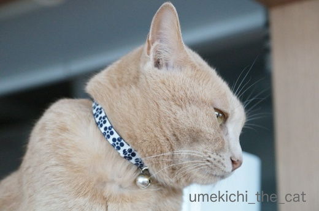
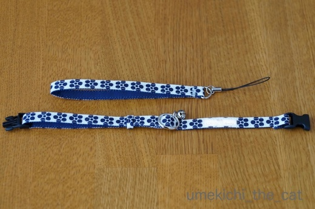
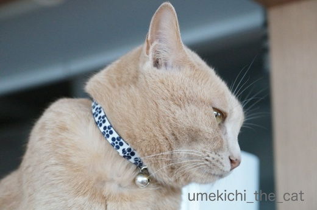

梅柄の首輪が出来ました。天橋立・伊根・舞鶴ー後半ー [梅吉]
梅吉の新しい首輪が届きました。
注文してから一ヶ月。待ち遠しかったー！

じゃ〜ん![[ぴかぴか（新しい）]](https://blog.ss-blog.jp/_images_e/150.gif)

梅柄なのです。
たっくさんのデザインがあったのですが迷うことなく決めました。
上に写っているのは共布で出来た携帯ストラップです。
首輪表には梅吉の名前と連絡先。
迷いに迷ったペットのおうちのID番号は

首輪の裏面に入れることに。
wwwで始まるHPアドレスだと文字数オーバーな上アルファベットは潰れて見えにくい・・・
と作り手の方から指摘があったのでこうしました。
HPのアドレスだってわかってもらえますよね？

さっそく首輪をつけて記念撮影。お似合いですよＯ(≧▽≦)Ｏ

今回は目線をいただかなくても大丈夫ですよ。
首輪が見えなくなっちゃいますから(^▽^;)
首輪を作っている方はテレビの戦隊ヒーローのベルトを手がけていたそうです。
柔らかい首輪でとっても軽い！大満足の仕上がりでした。
この首輪をしたからもう安心、ではありませんが万が一迷子になっても
ちゃんと戻ってこられる可能性は少しは高くなったかな？
 ↑ガブッと一押し↑
↑ガブッと一押し↑
宿をチェックアウトしてもう一度知恩寺にお参り。
お散歩時はガラガラだったのに観光バスが着いたらしく参拝客が多くなっていました。
アジア系の旅行客が多いなぁ。
そうそう、ここのおみくじは扇型でしたよ。
レトロなローカル線に乗って移動。この後レンタカーに乗り込みました。
向かったのは伊根の舟屋群。
舟屋をめぐる観光船に乗り込みました。
直前まで土砂降りでしたが晴れてきた！他はともかくここだけは晴れて欲しかったのでラッキー![[手（チョキ）]](https://blog.ss-blog.jp/_images_e/87.gif)
現在残っている舟屋は230件ほど。観光施設ではなくちゃんと普通に生活されているお家です。
外海の影響が少ないのでこのような家の作りが可能になったそうですよ。
舟屋の風景をもう一枚。だめだ・・・どうしてもカモメとトンビが写ってしまうw
船上で誰かがかっぱえびせんを投げ始めるとあっという間に鳥が集まってきました。
人間の手から直接食べようとする強者もいて手にとまられそうになった人が絶叫してました。
動物は好きだけどでかい野鳥が手にとまるのは怖いかもー。
クルーズ船を降りる頃にはまた土砂降り。
車に戻って次に向かったのは向井酒造。ここの杜氏は女性なんですよ。
古代米の赤米をつかった「伊根満開」というお酒を買ってきました。
この日本酒は肉料理、中華料理、パスタ・クラッカー・チーズなどの料理が合うんだとか。
わー、いつ飲もうかな〜。
色も華やかだから年末年始ちょっとハレの日に飲むのが良いかな＾＾
ランチは舞鶴の漁港近くにあるとれとれセンターで美味しい海鮮丼など、と思っていたのに。
海鮮丼はなぜかサーモンとまぐろ主体。このあたりサケとまぐろの水揚げはないと思うのですが・・・
興ざめして急遽食○ログ見つけたのは漁港近くの商店街にある「漁師小屋」というお店。
海鮮丼。
どこに行ってもサーモンは避けられないらしい・・・^^;好きだから良いんですけどね。
その他は。ヒラマサ、シイラ、かるく炙ったサワラ。ちゃんと地元で採れたお魚が乗ってます＾＾
サワラ、大阪では美味しいと思ったことなかったんですが舞鶴で開眼！
夕べの宿でもサワラが美味しかった。
やっぱり海辺の町で食べると違うのかな？
お腹いっぱいになったところで最終目的地へ向かいます。
若狭富士と呼ばれる青葉山の中腹にある松尾寺。
ここも西国三十三所の霊場です。
ここは京都府と福井県の県境。
もう少し足を延ばすと若狭・遠敷川があります。
東大寺のお水取りの若水の出発点。ここにもいつか行って見たいなー。
三十三箇所霊場めぐりも後ほんの数カ所を残すのみとなりました。
でも我が家からは行きにくいところばかりが残っています。
次に御朱印をいただけるのはいつになることやら・・・
ずいぶん雨に祟られた旅でしたがそのおかげか久しぶりに大きな虹を見ました。
わかりますか？二重になってます。
こんなに近くで虹を見たのは初めてかもしれない。
横に見えている山のあたりが虹のキワっぽかったので
「虹の生まれる場所を探しに行こう！」なんてカッコいいことも出来そうでしたが
可愛い梅吉が待っている我が家へ急ぎました。
長々と旅行記にお付き合いいただいてありがとうございましたm(_ _)m
注文してから一ヶ月。待ち遠しかったー！

じゃ〜ん

梅柄なのです。
たっくさんのデザインがあったのですが迷うことなく決めました。
上に写っているのは共布で出来た携帯ストラップです。
首輪表には梅吉の名前と連絡先。
迷いに迷ったペットのおうちのID番号は

首輪の裏面に入れることに。
wwwで始まるHPアドレスだと文字数オーバーな上アルファベットは潰れて見えにくい・・・
と作り手の方から指摘があったのでこうしました。
HPのアドレスだってわかってもらえますよね？

さっそく首輪をつけて記念撮影。お似合いですよＯ(≧▽≦)Ｏ

今回は目線をいただかなくても大丈夫ですよ。
首輪が見えなくなっちゃいますから(^▽^;)
首輪を作っている方はテレビの戦隊ヒーローのベルトを手がけていたそうです。
柔らかい首輪でとっても軽い！大満足の仕上がりでした。
この首輪をしたからもう安心、ではありませんが万が一迷子になっても
ちゃんと戻ってこられる可能性は少しは高くなったかな？
宿をチェックアウトしてもう一度知恩寺にお参り。
お散歩時はガラガラだったのに観光バスが着いたらしく参拝客が多くなっていました。
アジア系の旅行客が多いなぁ。
そうそう、ここのおみくじは扇型でしたよ。
レトロなローカル線に乗って移動。この後レンタカーに乗り込みました。
向かったのは伊根の舟屋群。
舟屋をめぐる観光船に乗り込みました。
直前まで土砂降りでしたが晴れてきた！他はともかくここだけは晴れて欲しかったのでラッキー
現在残っている舟屋は230件ほど。観光施設ではなくちゃんと普通に生活されているお家です。
外海の影響が少ないのでこのような家の作りが可能になったそうですよ。
舟屋の風景をもう一枚。だめだ・・・どうしてもカモメとトンビが写ってしまうw
船上で誰かがかっぱえびせんを投げ始めるとあっという間に鳥が集まってきました。
人間の手から直接食べようとする強者もいて手にとまられそうになった人が絶叫してました。
動物は好きだけどでかい野鳥が手にとまるのは怖いかもー。
クルーズ船を降りる頃にはまた土砂降り。
車に戻って次に向かったのは向井酒造。ここの杜氏は女性なんですよ。
古代米の赤米をつかった「伊根満開」というお酒を買ってきました。
この日本酒は肉料理、中華料理、パスタ・クラッカー・チーズなどの料理が合うんだとか。
わー、いつ飲もうかな〜。
色も華やかだから年末年始ちょっとハレの日に飲むのが良いかな＾＾
ランチは舞鶴の漁港近くにあるとれとれセンターで美味しい海鮮丼など、と思っていたのに。
海鮮丼はなぜかサーモンとまぐろ主体。このあたりサケとまぐろの水揚げはないと思うのですが・・・
興ざめして急遽食○ログ見つけたのは漁港近くの商店街にある「漁師小屋」というお店。
海鮮丼。
どこに行ってもサーモンは避けられないらしい・・・^^;好きだから良いんですけどね。
その他は。ヒラマサ、シイラ、かるく炙ったサワラ。ちゃんと地元で採れたお魚が乗ってます＾＾
サワラ、大阪では美味しいと思ったことなかったんですが舞鶴で開眼！
夕べの宿でもサワラが美味しかった。
やっぱり海辺の町で食べると違うのかな？
お腹いっぱいになったところで最終目的地へ向かいます。
若狭富士と呼ばれる青葉山の中腹にある松尾寺。
ここも西国三十三所の霊場です。
ここは京都府と福井県の県境。
もう少し足を延ばすと若狭・遠敷川があります。
東大寺のお水取りの若水の出発点。ここにもいつか行って見たいなー。
三十三箇所霊場めぐりも後ほんの数カ所を残すのみとなりました。
でも我が家からは行きにくいところばかりが残っています。
次に御朱印をいただけるのはいつになることやら・・・
ずいぶん雨に祟られた旅でしたがそのおかげか久しぶりに大きな虹を見ました。
わかりますか？二重になってます。
こんなに近くで虹を見たのは初めてかもしれない。
横に見えている山のあたりが虹のキワっぽかったので
「虹の生まれる場所を探しに行こう！」なんてカッコいいことも出来そうでしたが
可愛い梅吉が待っている我が家へ急ぎました。
長々と旅行記にお付き合いいただいてありがとうございましたm(_ _)m

カフェオレ色の梅吉

梅吉 2023年8月10日 永眠


梅吉と出会った譲渡会

犬猫の理由なき殺処分ゼロ
妄想広告
UMEKICHI 光

爆発的に早い！
時々攻撃的！
Thanks to Mr.Boss365
爆発的に早い！
時々攻撃的！
Thanks to Mr.Boss365

可愛い首輪ですねぇ～(*^_^*)
梅吉さんにお似合いですね♪
万が一のことは起こってほしくはありませんが
念のためにも必要ですよね！
by きぃ (2017-12-02 16:36)
レトロなローカル線にダブルレインボー
いい雰囲気です~♪
お名前にぴったりな首輪、
よかったですね。
by ふにゃいの (2017-12-02 17:58)
梅柄の首輪をした凛々しい梅吉さんの横顔ですね。
伊根は、釣り人としての目で見てしまいます(^^;
良いですね、魚が旨そうです(^^)
by riverwalk (2017-12-02 18:13)
可愛い梅柄首輪。梅吉くんお似合いよ♪
オーダーなのですね。
ストラップもお揃いでテンションあがる～～っ(≧▽≦)
三十三箇所霊場めぐり。残り数か所。
次回も楽しみですね。
旅の最後に見えた虹。虹もテンション上がるよね。ダブルだし。
虹の生まれる場所を探しに？めちゃカッコいい！！
by emi (2017-12-02 18:58)
梅しゃまの新しい首輪、素敵なだけじゃなくて、いろんな愛が込められているのが・・・ウックときちゃいます♪
「幸せの隠れ場所」という映画を思い返してしまいました！ 愛を発信する女性の素晴らしさよ。
ダブルレインボーも、祝福していますね！「ちぃよ、そのまま邁進するのじゃー」と。
by Ginger (2017-12-02 19:07)
梅柄は梅吉さんのためにある模様なんですね。和風の雰囲気もぴったりです。雨の合間の旅行でも最後に虹が出るのは吉兆ですよね。しかもダブルなんてきっと大吉だわ。
by zombiekong (2017-12-02 19:21)
梅吉さん、首輪、似合っていますよ〜
お母ちゃんとお揃いなのですね。
記念撮影、バッチリ目線ありがとう（笑）
伊根の舟屋群には行ってみたいと思っています。
二重の虹、幸せが倍になりますね。
by kiki (2017-12-02 20:38)
イケメンな梅吉さんにお似合いの素敵な首輪ですねぇ( ^ω^ )
首輪・・・うちはノエルだけがOKで、他の３ニャンはNGなんですよねぇ(ｰ ｰ;)
着けた時は大人しいのですが、気づくと外してて「あれ？」って探すと
留め具が破壊された首輪が３ニャンで９本(*_*)
諦めました(ｰ ｰ;)
伊根の舟屋群、うちも一度行ってみたい場所ですがちょっと遠い(⌒-⌒; )
by ニッキー (2017-12-02 21:14)
梅柄の首輪、とてもお似合いです。
サワラ、照り焼きが好きなのですが機会が無くてなかなか口に入りません。^^;
二重の虹、しかもくっきりはっきりと見れるのは珍しいですね。
by yes_hama (2017-12-02 22:03)
オーダーメイドですか！（ ゜∀ ゜）ステキ。
梅吉くんにもよく似合いますね。しかもリーズナブル！
ローカル線萌えです（u_u*
そして旅の楽しみはなんといっても「食」！
虹もすばらしいです。いい旅になりましたね。
by Ja-Kou66 (2017-12-03 01:48)
おぉっ♪ 梅柄に爽やかなブルーは、梅吉君にとっても
よく似合っていますね(*^^*)
ちゃんと付けさせてくれて、お利口さんだな～。
うちのあかりは…(;^ω^)
舟屋って言うんですね。
面白い建物ですね。初めて見ました( ´∀｀ )
by マーヤ (2017-12-03 02:08)
わお！梅吉さんには、これしかないという梅柄！
いい感じですよー(≧∀≦)
そして迷子になったときのID登録。
こういうサービスもあるんですね。
by よーちゃん (2017-12-03 06:02)
梅柄の首輪ですか、梅吉さんにピッタリですね。
「ペットのおうち」はこのまま検索かけたらヒットしましたけど
IDの使い方が分り難いかも＾＾；
by ぽちの輔 (2017-12-03 07:12)
梅柄！ なるほど～ｗ。
オーダーの首輪、いいですね！ 梅吉くん、着用してくれるし。
うちはたいてい後ろ足のバリバリで数時間後には破壊されてしまうので、
首を買う楽しみを味わえません・・・・。
茶トラ軍団でいまからがんばろうかしら？
柄はそう、麦穂とうずまきかなｗ。
by ハリネズミ (2017-12-03 09:12)
似合ってますね。
名前のまんまでオーダーメイドみたい。
by 響 (2017-12-03 10:59)
首輪、とっても素敵な柄で
梅吉君にピッタリだね^^
カメラ目線、ばっちりで「これは自分のものだ〜」っていうの分かってるみたい♪♪
舟屋をめぐる観光船。このときは雨じゃなかったのですね！
良かったよーーー！！
独特の景色で面白いですよね。酒造はぜったいリベンジするぞー(笑)
サワラ、舞鶴のは美味しいってテレビでやっていたの覚えてます。
二重の虹、これは貴重なものを見ちゃいましたね^^
写真もバッチリ！
by リュカ (2017-12-03 12:11)
梅吉はん！かっこええ首輪買うてもろたんやな〜(=^x^=)オーダーメイドやなんてまた粋なな〜♪しかも梅柄て！天神さんのマークとも一緒や〜(^^)めっちゃお似合いやで！
お母はんのセンスも抜群や(^^)v
うちも作ってもらうように姉やんにお願いせなアカンわ♪(え・買えとな…ハイ)
ちぃさんとリュカさんのブログを続けて拝見するとお二人と連れ立った旅の気分を味わえて楽しかったです！また猫談義がしたいです〜ヽ(*´∀｀)
by くつしたにゃん (2017-12-03 18:06)
梅の和柄首輪、カフェオレ色の梅吉さんにぴったり♪
大きなタグをつけるより、首輪に縫ってあるほうがストレスなくていいですね！
うちはまず首輪をつけるところからスタート、先は長そうです・・・。
舟屋はいい眺めですね～波がザブンザブン押し寄せたら水浸し？と思ったら、この辺りは穏やかなんですね(^▽^;)
by ゆきち (2017-12-03 20:39)
梅柄の首輪、すてきですね～！
梅吉さんにぴったり♪
注目されて、もてもてすぎて困ってるようなお顔＾＾
行ってらしたのも素敵なところですね～。
ゼンゼン知らないので、新鮮です。舟屋の眺め‥海が荒れないんですね。
松尾寺も山もいいですね～＾＾
by sana (2017-12-03 23:28)
梅吉さんっ！よく似合ってる！！(^^)/
一目で梅柄とわかるところが、愛情たっぷり♡
ＵＲＬのタグも、十分わかりますよ。
素材もやわからそうで、これは梅吉さん、お気に入りですね。
首輪サイト、拝見したところ……。めっちゃ、ソソられました！
手頃なお値段なのに、カスタマイズもできるのですね。
作り手さんの、誠実さが見て取れるようでした(^^
旅・2日目の、2重の虹。
素敵なことが、待ってる兆しかも。ウキウキ♪
by morichan (2017-12-04 12:21)
梅柄！いいですね最高です！男前に磨きがかかりましたね!!
旅行お疲れさまでした～2重の虹は珍しいですね。梅吉くんも留守番お疲れさまでした(*^^*)
by palpal (2017-12-04 14:48)
きぃさん＞
首輪も鈴も「完全室内飼いの猫には必要ない」という意見もありますが
脱走や災害の事を考えるとつけておく方が安心だなと思っています。
幸い梅吉は首輪を嫌がらないので（うちの子になってすぐに付けたからかな）
ちょっと気が楽です＾＾
ふにゃいのさん＞
ローカル線、座席が市松模様の布を使っていたり
和テイストで良い雰囲気でした。
乗り合わせた男性の車内や運転席への関心がハンパなかったので
鉄道好きにはたまらない車両だったのかもしれません＾＾
riverwalkさん＞
伊根、舞鶴湾、天気は良くなかったけど波が静かでした。
いつもこういう穏やかな海なのでしょうか・・・
釣り人も沢山見かけて「riverwalkさんとkouさんの仲間だな！」
と思って見てました(^_－)☆
お魚はホント感動ものの美味しさでした！
emiさん＞
共布のストラップができる・・・
が、このサイトでオーダーしようと思った理由でもあります(๑˃̵ᴗ˂̵)و
これでいつも梅吉と一緒だよー＾＾
三十三ヶ所、結願の札所・華厳寺が岐阜県にあります。
順番通りに巡ってはいないんだけど最後はそこで締めようと思っています。
岐阜って未開の地。
お寺の近くには何があるんだろうとリサーチするのも楽しいです。
今度は「風の生まれる場所」が探せるかしら(^_－)☆
（って華厳寺のある街の観光協会のHPに書いてあったの！偶然！！）
髪の毛ぼーぼーになりそうだよ・・・
Gingerさん＞
首輪にいろんな情報を入れたから安心・・・ではないのですが
愛のこもった首輪が梅吉を守ってくれると良いな、とも思っています＾＾
ダブルレインボーとGingerさんからの口寄せ的なお言葉に背中を押されて
梅吉をますます大切にしますねー！！
zombiekongさん＞
梅柄を見たときに運命を感じちゃいましたよー。
もう他の柄をチェックもせずに即決でした＾＾
丹後半島から若狭にかけてはよく虹が見えるのかもしれません。
１週間早く旅をされたリュカさんも見たって言ってたし。
でもダブルなんてそうそうないですよね！良いもの見れましたー(๑˃̵ᴗ˂̵)و
kikiさん＞
お揃いです♪うれしいな♪♪
舟屋、是非是非！
大阪からならがんばれば日帰りでもいけますが
舟屋民宿もあったのでお泊まりでどうぞー＾＾
民宿ならさらに美味しいお魚が食べられそうです。
ニッキーさん＞
首輪を破壊するだけなら良いですが
外そうと頑張っているうちに歯に引っかかってげーっとなったり
後ろ足で蹴っているうち首を傷つけたら大変ですものね。
ニッキーさんちのみなにゃんはヌーディーな魅力で
迫っていただきましょう(≧ω≦｡)
舟屋、関東方面からなら最低でも二泊ですよね。
でもハワイより近いですよーwwwww
yes_hamaさん＞
サワラ、大阪ではスーパーでも良く見かける魚なので
再チャレンジしてみようと思っています。
照り焼き！美味しそうです！！レシピ検索して見ますね。
二重の虹、車で移動していたせいもあるのか
すぐに見えなくなっちゃいました。
が、肉眼だとさらにくっきりはっきり見えましたよー＾＾
Ja-Kou66さん＞
「猫用の変身ベルトも出来ますか？」と聞いてみたかったのですが・・・
恥ずかしいのでやめましたー(〃ω〃)
（本気なのでさらに照れる）
梅柄には運命を感じましたよ＾＾
ローカル線お好きなのですね！
座席シートが市松模様でとってもレトロな感じの内装でした。
マニアっぽい乗客が電車内部と運転席をめっちゃ観察していたので
レアな車両だったのかもしれません。
運転手さんは教官付きだったのですが・・・・
「今のスピードで過ぎですかね？」「もう少し抑えた方がええな」と
会話しているのが聞こえてきて・・・・
確かにバックストレート、グイグイ走ってました。ちょっと怖かった^^;
マーヤさん＞
あかりちゃんは首輪NGなのですね。
私は梅吉には首輪をつけさせたいと思っていたので
ふとーい髪ゴムを輪っかにしたので慣らしました。
マーヤさんは二匹目のにゃんこの時にどうですか(^_－)☆
舟屋、面白いですよね。
一度この目で見たかったので嬉しかったです。
見たら今度は入ってみたい泊ってみたいという思いが・・・^^;
よーちゃん＞
そうなんですよー！梅柄には運命感じちゃいました！！
脱走や災害時・・・梅吉とはぐれることがないのが一番なのですが
もしも、を考えると色々手を打っておかないと、と思っています。
東日本の震災以降みなさんペットへの対策を真剣に考えているようですよ。
ぽちの輔さん＞
梅柄の布は梅吉の為にあるな！と思いましたよ＾＾
ID検索の窓、
HPのトップページの目立つところにどーんと置いて欲しいのですが・・・
一度要望を出して見たのですが反応がありませんでした。
HPリニューアル時に検索しやすくなっていることを期待してます。
ハリネズミさん＞
バリバリ破壊はにゃんこ本体に傷が付いたら大変！
私は子猫時の梅吉には100均の太い髪ゴム（生ゴムじゃないタイプ）
を輪にしたものを首輪代わりにして慣れさせました。
茶トラ軍団、まだ間に合うかもー＾＾
梅吉の首輪柄は未来永劫梅柄でw
なくなっちゃったら困るから買いだめしようかしら(≧ω≦｡)
響さん＞
この柄の布は梅吉専用でキープしていただきたいくらいです(≧ω≦｡)
リュカさん＞
リースナブルで可愛い柄がたくさんあって・・・
このサイト教えてくれてありがとう！！
迷うなーって思いましたが梅柄で即決でした＾＾
伊根リベンジは是非是非！
あの静かな港町に泊まってあの湾で取れたお魚を食べて
あの地域の酒蔵のお酒を飲む！サイコー！！
星も綺麗に見えそうだよ♡
くつしたにゃんさん＞
くつした姐さんにぴったりな かわええのが ぎょうさんあったで
わしのうめがらは てんじんのおっちゃんの おくりものや おもったでv
偶然にもリュカさんとは１週間違いの旅行になりましたー＾＾
天橋立の晴れ、雨、両方お楽しみいただけたと思います！
猫談義、猫飲み会・・・ふふふどちらも楽しそう。ぜひぜひ〜！！
ゆきちさん＞
とっても軽いアクリルのタグも教えていただいたのですが
また梅吉が嫌がるかも・・・・と首輪に縫いつけタイプにしました。
前の首輪よりも軽くて柔らかいので梅吉も何の違和感もなく
つけてくれましたよ＾＾
伊根では土砂降りだったり晴れ間が出たりと
空模様は目まぐるしく変わっていましたが
海はずーっと凪いだままでした。
漁業が盛んな日本ではあちこちにあっても良さそうな舟屋ですが
海がいつも凪いでいるところはそうそうないのかなと思いました。
sanaさん＞
梅柄、似合っちゃいました(≧ω≦｡)
初冬の日本海側は海が暗くて、波が高くて風が寒くて・・・
（北海道の海のイメージ）と思っていたのですが
穏やかな海を見てすっかりイメージが変わりました。
お魚も美味しかったし本当に良いところ。
また行って見たいなと思う土地でした＾＾
morichanさん＞
首輪、本当に軽くて柔らかくてオススメです。
梅吉もつけ心地が良いのか前の首輪の時よりも
後ろ足で首回りを掻く回数が減ったような気がします。
共布でストラップも出来ますよー♡いかがですかー♡♡
（回し者ではありませんよw)
二重虹、みなさんの良いことあるかもとのコメントに背中を押されて
ジャンボ宝くじを買うことを決意！（←それかい！）
palpalさん＞
ふふふ、梅柄似合うでしょーＯ(≧▽≦)Ｏ
ストラップもね、良いですよ＾＾
旅行も良いけれどやっぱりお家が一番
梅吉と一緒が一番です＾＾
（最近お布団に入ってくるので磔寝状態で体が痛いけどw)
by ちぃ (2017-12-04 22:05)
伊根満開、立ち姿がいいですね！
やっぱ、冷やしてのむのかな〜〜
最後の虹といい、充実の旅だったようですね。羨ましく拝読いたしました。
by KENT0mg (2017-12-04 22:08)
梅吉さんの新しい首輪可愛いですね！
僕は昨日の18時頃にロンドンから帰宅しましたが、11時間以上のフライトは時差ぼけが行きも帰りも酷く、今日まで有休なので、12時間以上寝ていました(^^)
by ma2ma2 (2017-12-05 13:13)
KENT0mgさん＞
おお！酒瓶の立ち姿を愛でるとは！！
お酒好きな方は目の付け所が違いますねー＾＾
伊根満開は軽く冷やしてワイングラスで飲んでみようと思っています。
フルーティーなお酒はこうすると香りが立って美味しいような気がしますよ^_－)☆
ma2ma2さん＞
お帰りなさい！有給中に時差ボケ解消してくださいねー。
ロンドン旅行記、楽しみにしています！！
by ちぃ (2017-12-05 16:01)